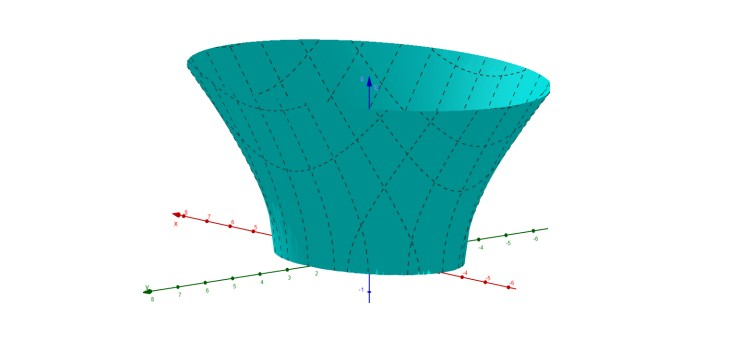

Il programma di matematica del quinto anno si è concentrato quasi interamente sull'analisi, in particolare sullo studio di funzione, i limiti, le derivate e gli integrali. Non si è trattato solo di fare calcoli meccanici alla lavagna, ma di capire come questi strumenti permettano di analizzare l'andamento di un fenomeno nel tempo e di prevederne i risultati.
Nonostante le difficoltà oggettive che la materia comporta, ne ho apprezzato molto il valore logico. Saper leggere un grafico, analizzare una funzione e interpretare i dati sono competenze fondamentali che mi hanno allenato la mente a ragionare in modo strutturato. È un tipo di approccio analitico che allena la mente a ragionare in modo rigoroso e strutturato, una competenza trasversale che vale in qualsiasi ambito.
